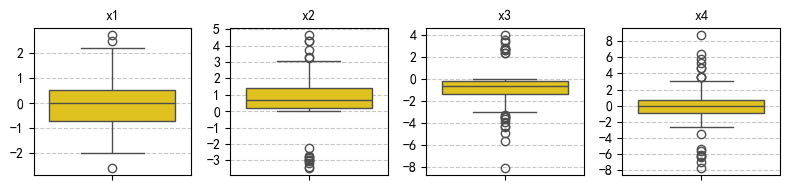
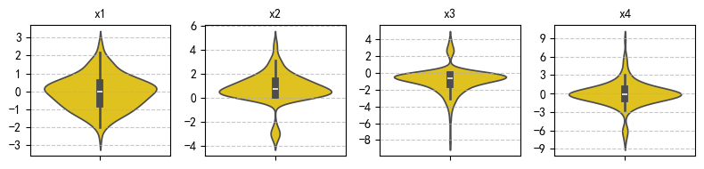
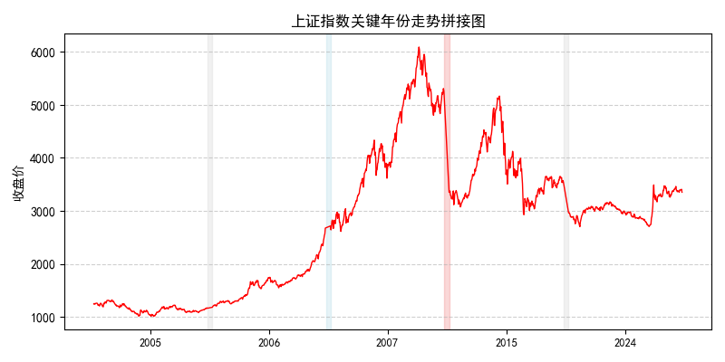
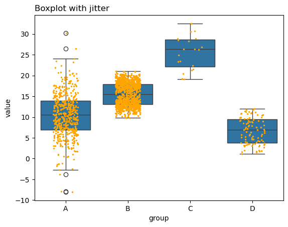

25 箱型图和小提琴图
数据分析过程中，均值和标准差只能粗略地描述数据的集中趋势和离散程度，但不能反映数据的分布形态、偏态和峰态等特征。本讲介绍两种常用的可视化工具：箱型图（Box Plot）和小提琴图（Violin Plot）。它们能够直观地呈现中位数、25% 分位数、75% 分位数等统计量，更为全面地描述数据的分布特征和可能存在的离群值。
25.1 箱线图（Boxplot）

对于变量 \(x\)，我们将其中位数记为 \(p50\) 或 \(Q2\)，第一四分位数（\(p25\)）和第三四分位数（\(p75\)）分别记为 \(Q1\) 和 \(Q3\)。同时，其最大值和最小值分别记为 \(x_{Max}\) 和 \(x_{Min}\)。
箱线图由箱体、胡须和异常值三部分组成。
- 箱体：
- 箱体的上下边缘分别是数据的第一四分位数（\(Q1\)）和第三四分位数（\(Q3\)）。
- 中间的横线表示数据的中位数（Median）。
- 箱体的高度表示数据的四分位距（IQR），即 \(IQR = Q3 - Q1\)。
- 胡须：
- 箱体的上（右）胡须延伸至 \(B^H = Q3 + 1.5 \times IQR\) 的位置 (若 \(x_{Max} < B^H\)，则上（右）胡须延伸至 \(x_{Max}\))。
- 箱体的下（左）胡须延伸至 \(B_L = Q1 - 1.5 \times IQR\) 的位置 (若 \(x_{Min} > B_L\)，则下（左）胡须延伸至 \(x_{Min}\))。
- 异常值：
- 异常值是指超出胡须范围的观测值，通常用圆圈表示。
此处，\(1.5 \times IQR\) 是一个常用的经验值，用于判断数据的异常值。参数 1.5 取决于我们对异常值的定义，通常取值范围在 1.5 到 3 之间。取值越大，表示我们对异常值的定义越宽松。
下图展示了箱线图结构（上图）与正态分布概率密度函数（下图）之间的对应关系。
下半部分为标准正态分布曲线，并在横轴上标注了与箱线图中 Q1、Q3 所对应的 \(\pm 0.6745\sigma\) 位置。可以看到：
- 红色区域覆盖中间的 50%，对应箱体内部；
- 两侧蓝色区域各占 24.65%，与胡须区间一致；
- 超出 \(\pm 2.698\sigma\) 的区域仅占 0.35%，对应箱线图之外的极端值。

25.2 直观感受
下面，我们模拟生成一个服从 \(N(0,1)\) 分布的随机数，\(N=5000\)，然后分别绘制其直方图 (核密度函数图)、箱线图和小提琴图 (查看 Codes)。
📊 数据分布摘要
├─ 核心趋势
│ ├─ 均值： 0.02
│ └─ 中位数：0.03
├─ 四分位距
│ ├─ Q1：-0.65
| ├─ Q3： 0.69
│ └─ IQR：1.34 (Q3-Q1)
├─ 理论边界
│ ├─ 下限：Q1-1.5IQR = -2.66
│ └─ 上限：Q3+1.5IQR = 2.70
└─ 实际极值
├─ 最小值：-3.80
└─ 最大值： 3.57
25.3 小提琴图
小提琴图是箱线图的扩展，除了展示数据的分布特征外，还能显示数据的密度分布。它通过在箱线图的基础上添加一个核密度估计（Kernel Density Estimation, KDE）曲线来实现。小提琴图可以更好地揭示数据的分布形态，尤其是在数据量较大时。
小提琴图的核心部分与箱线图类似，但它还包含了以下几个要素：
- 核密度估计（KDE）：小提琴图的两侧展示了数据的密度分布，通常使用高斯核密度估计来平滑数据分布。
- 小提琴形状：小提琴图的形状表示数据的分布特征，宽度越大表示数据在该位置的密度越高。
25.4 箱型图与小提琴图的对比
箱型图和小提琴图都是用于展示数据分布的可视化工具，但它们在信息传达和视觉效果上有所不同。以下是它们的主要区别： - 信息传达：箱型图主要关注数据的集中趋势和离散程度，而小提琴图则同时展示了数据的分布形态和密度信息。 - 视觉效果：箱型图通常较为简洁，适合快速识别数据的基本特征；小提琴图则提供了更丰富的信息，但可能在视觉上显得复杂。 - 数据量：在数据量较小的情况下，箱型图可能更易于理解；而在数据量较大的情况下，小提琴图能够更好地揭示数据的分布特征。
25.4.1 同时呈现多个箱线图
在实际应用中，可以同时呈现多个箱线图，以便比较不同时间段或不同资产的收益率分布特征。可以使用 matplotlib 的 subplots() 函数创建多个子图，并在每个子图上绘制箱线图。
25.5 模拟分析
模拟四个序列：N = 100，Python，seed = 42，分布如下： 1. 标准正态分布 2. 左偏分布，有少量离群值 (10%) 3. 右偏分布，有少量离群值 (10%) 4. 对称分布，有大量离群值 (30%)
统计： 1. 计算四个序列：均值、标准差、min, max, p25, p50, p75, 偏度、峰度； 2. 呈现： - 一张表格，各列为统计量，行索引为序列名称； - 统计量小数点后保留一位有效数字 - 调用必要的包，确保表格美观，统计量最好能在小数点处对齐
绘图： 1. 1 行 4 列的子图：呈现四个序列的箱线图 2. 1 行 4 列的子图：呈现四个序列的小提琴图 3. 图形尺寸：8x2；y_titck: 取整数，疏密有度； 4. 子图标题用中文，字体为黑体，请假在必要的库 5. 屏蔽警告信息
import numpy as np
import pandas as pd
import seaborn as sns
from scipy.stats import skew, kurtosis
from tabulate import tabulate
import matplotlib.pyplot as plt
# 屏蔽警告信息
import warnings
warnings.filterwarnings("ignore")
# 设置随机种子以确保结果可复现
np.random.seed(42)
# 模拟四个序列
N = 200
data = {
"x1": np.random.normal(0, 1, N),
"x2": np.concatenate([np.random.exponential(1, N - 10), np.random.normal(-3, 0.5, 10)]),
"x3": np.concatenate([np.random.exponential(1, N - 10) * -1, np.random.normal(3, 0.5, 10)]),
"x4": np.concatenate([np.random.normal(0, 1, N - 30), np.random.normal(0, 5, 30)])
}
# 统计计算
# 使用 numpy 计算统计量
stats = {}
for name, values in data.items():
stats[name] = {
"Mean": np.mean(values),
"SD": np.std(values),
"Min": np.min(values),
"Max": np.max(values),
"P25": np.percentile(values, 25),
"P50": np.percentile(values, 50),
"P75": np.percentile(values, 75),
"Skew": skew(values),
"Kurt": kurtosis(values)
}
# 构建 DataFrame 并保留一位小数
stats_df = pd.DataFrame(stats).T.round(1)
# 使用 tabulate 美化表格输出
print(tabulate(stats_df, headers="keys",
stralign="right", floatfmt=".1f"))
# 绘制箱线图
fig, axes = plt.subplots(1, 4, figsize=(8, 2))
for ax, (label, values) in zip(axes, data.items()):
sns.boxplot(y=values, ax=ax, color="gold")
ax.set_title(label, fontsize=10)
ax.grid(axis='y', linestyle='--', alpha=0.7)
ax.yaxis.set_major_locator(plt.MaxNLocator(integer=True))
plt.tight_layout()
plt.show()
# 绘制小提琴图
fig, axes = plt.subplots(1, 4, figsize=(8, 2))
for ax, (label, values) in zip(axes, data.items()):
sns.violinplot(y=values, ax=ax, color="gold")
ax.set_title(label, fontsize=10)
ax.grid(axis='y', linestyle='--', alpha=0.7)
ax.yaxis.set_major_locator(plt.MaxNLocator(integer=True))
plt.tight_layout()
plt.show() Mean SD Min Max P25 P50 P75 Skew Kurt
-- ------ ---- ----- ----- ----- ----- ----- ------ ------
x1 -0.0 0.9 -2.6 2.7 -0.7 -0.0 0.5 0.1 -0.0
x2 0.8 1.2 -3.5 4.7 0.2 0.7 1.4 -0.6 3.3
x3 -0.9 1.4 -8.2 4.0 -1.4 -0.6 -0.2 -0.5 5.1
x4 -0.0 2.0 -7.8 8.8 -0.9 -0.1 0.8 -0.1 4.6

25.6 应用实例：上证综合指数收益率年度分布
# 完整代码：TS_SZ_index.ipynb
# 安装必要的库（如未安装）
# !pip install plotly akshare pandas
import pandas as pd
import akshare as ak
# 获取上证指数的历史数据
sz_index = ak.stock_zh_index_daily(symbol="sh000001") # 上证指数代码为 "sh000001"
# 重命名列名以便后续处理
sz_index.rename(columns={'date': 'day', 'close': 'close'}, inplace=True)
# 将日期列转换为 datetime 类型
sz_index['day'] = pd.to_datetime(sz_index['day'])
# 计算日收益率
sz_index['daily_return'] = sz_index['close'].pct_change()
# 提取年份列
sz_index['year'] = sz_index['day'].dt.year
# 去除 open, high, low 列
sz_index.drop(columns=['open', 'high', 'low'], inplace=True)
# Display the first 3 rows and the last 3 columns
print(sz_index.head(3))
print('-' * 50)
print(sz_index.tail(3)) day close volume daily_return year
0 1990-12-19 99.98 126000 NaN 1990
1 1990-12-20 104.39 19700 0.044109 1990
2 1990-12-21 109.13 2800 0.045407 1990
--------------------------------------------------
day close volume daily_return year
8391 2025-05-07 3342.665 51115960600 0.008007 2025
8392 2025-05-08 3351.996 42837776600 0.002791 2025
8393 2025-05-09 3341.999 39890919100 -0.002982 2025接下来，我们挑选几个特定的年份，绘制其日收益率的箱型图。
注意，此处，我们使用的是 seaborn 库中的 boxplot() 函数，而不是 matplotlib 中的 boxplot() 函数。前者可以更好地处理数据的分组和分类，并且提供了更多的可视化选项。
import matplotlib.pyplot as plt
import seaborn as sns
# 筛选指定年份的数据
#selected_years = [1995, 1997, 2005, 2006, 2007, 2014, 2015, 2021, 2024]
selected_years = [1997, 2005, 2006, 2007, 2014, 2015, 2021, 2024]
filtered_data = sz_index[sz_index['year'].isin(selected_years)]
# 绘制多个年度的箱型图
plt.figure(figsize=(6, 3))
sns.boxplot(x='year', y='daily_return',
data=filtered_data, palette='Set3')
plt.grid(axis='y', linestyle='--', alpha=0.7)
plt.show()
该图为多个特定年份的深证成指日收益率的箱线图，涵盖了 1997、2005、2006、2007、2014、2015、2021 和 2024 年等八个代表性年份，展示了每年交易日中日收益率的分布情况。
从中位数线（箱体中间的横线）来看：
- 中位数大于零。1997年、2006 年、2007 年和 2015 年的中位收益率明显高于零，说明这些年份中有超过一半的交易日呈现正收益，整体市场偏强。
- 中位数接近于零。2014 年、2021 年和 2024 年中位数趋近于零，意味着正负收益天数接近持平。
- 中位数小于零。2005 年中位收益率低于零，表明该年中大部分交易日处于负收益区间，市场情绪低迷。
从箱体的高度 (即 \(IQR = Q3 - Q1\)) 和胡须长度来看： - 箱体高度较高，胡须较长。1997 年、2007 年和 2015 年的箱体高度较高，且胡须较长，表明这几年的年内收益波动性较大，市场情绪起伏明显。 - 箱体高度较低，胡须较短。2021 年的箱体很低，胡须也很短，上下胡须外侧的离群值也很少。可以推断，该年是一个大熊市，市场情绪低迷，整体波动性较小。
从离群点来看： - 1997 年的箱型图中，上下胡须外侧的离群值点都比较多，说明当年市场波动剧烈，存在较多极端收益的交易日 (如果你绘制 1995 年以前的箱线图，会发现波动更为剧烈，当时没有 10% 日内涨跌幅限制，市场波动性更大)。 - 2007 年和 2015 年的分布特征非常相似，都是在下胡须方向上有较多的离群点，说明存在较多单日大幅下跌的情况。
25.7 特定年份分析：
2005 年 vs 2006 年：
- 2005 年的箱体整体较低，中位数为负，且上胡须较短，反映当年大部分交易日处于负收益区间，市场情绪低迷。
- 2006 年则大为反转，中位数跃升至零之上，箱体明显上移，收益分布更偏向正区间，显示出市场在牛市初期的积极走势。这一变化与当年“股权分置改革推进、人民币升值预期增强”等政策背景密切相关。
2024 年：
- 箱体高度极窄，即 Q75 与 Q25 非常接近，说明日收益率的四分位间距（IQR）很小，波动性低；
- 同时，存在较多离群点分布在上下两侧，提示虽然整体震荡区间狭窄，但偶发性的大涨或大跌依然存在，这可能与 AI、芯片等概念股轮动剧烈，但整体指数运行平稳有关。
下图呈现了几个特定年份的沪市综合指数的时序图 (codes)，大家可以挑选一些年份，将其收盘价的时序图与上图中对应年份的箱型图进行对比，以便更深入地理解箱型图的含义。

# 绘制小提琴图
plt.figure(figsize=(6, 3))
sns.violinplot(x='year', y='daily_return',
data=filtered_data, palette='Set3')
plt.grid(axis='y', linestyle='--', alpha=0.7)
plt.show()
# https://matplotlib.org/stable/gallery/statistics/boxplot_vs_violin.html
import matplotlib.pyplot as plt
import numpy as np
fig, axs = plt.subplots(nrows=1, ncols=2, figsize=(9, 4))
# Fixing random state for reproducibility
np.random.seed(19680801)
# generate some random test data
all_data = [np.random.normal(0, std, 100) for std in range(6, 10)]
# plot violin plot
axs[0].violinplot(all_data,
showmeans=False,
showmedians=True)
axs[0].set_title('Violin plot')
# plot box plot
axs[1].boxplot(all_data)
axs[1].set_title('Box plot')
# adding horizontal grid lines
for ax in axs:
ax.yaxis.grid(True)
ax.set_xticks([y + 1 for y in range(len(all_data))],
labels=['x1', 'x2', 'x3', 'x4'])
ax.set_xlabel('Four separate samples')
ax.set_ylabel('Observed values')
plt.show()
25.7.1 Add Jitter
By adding a stripplot, you can show all observations along with some representation of the underlying distribution.
Source: Hidden Data Under Boxplot
# libraries
import matplotlib.pyplot as plt
import numpy as np
import seaborn as sns
import pandas as pd
# Dataset:
a = pd.DataFrame({ 'group' : np.repeat('A',500), 'value': np.random.normal(10, 5, 500) })
b = pd.DataFrame({ 'group' : np.repeat('B',500), 'value': np.random.normal(13, 1.2, 500) })
c = pd.DataFrame({ 'group' : np.repeat('B',500), 'value': np.random.normal(18, 1.2, 500) })
d = pd.DataFrame({ 'group' : np.repeat('C',20), 'value': np.random.normal(25, 4, 20) })
e = pd.DataFrame({ 'group' : np.repeat('D',100), 'value': np.random.uniform(12, size=100) })
df = pd.concat([a,b,c,d,e])
# boxplot
ax = sns.boxplot(x='group', y='value', data=df)
# add stripplot
ax = sns.stripplot(x='group', y='value', data=df, color="orange", jitter=0.2, size=2.5)
# add title
plt.title("Boxplot with jitter", loc="left")
# show the graph
plt.show()